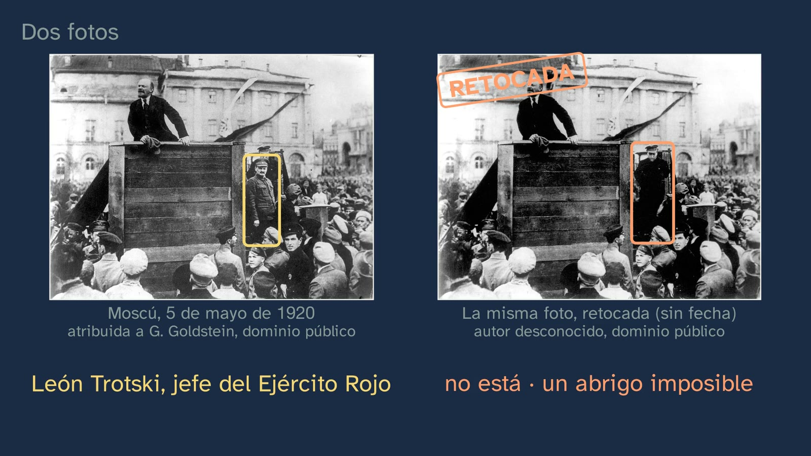
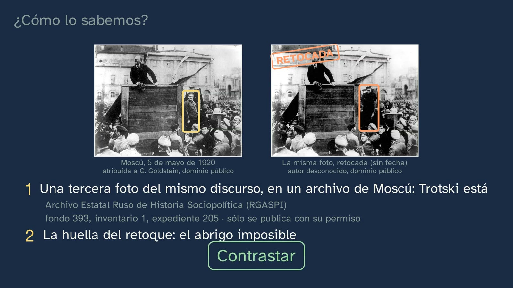
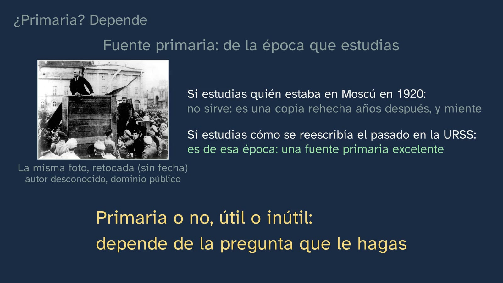
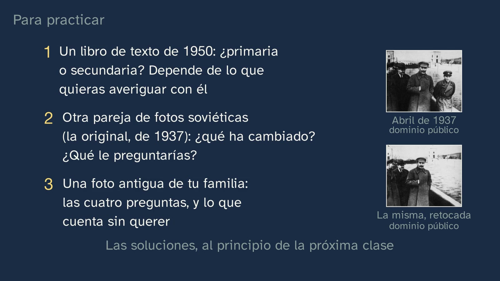
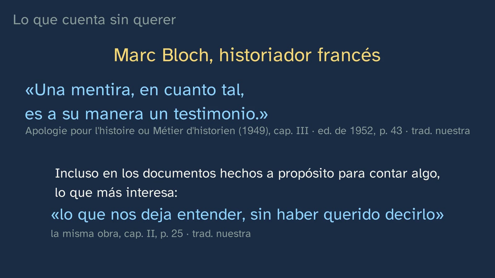
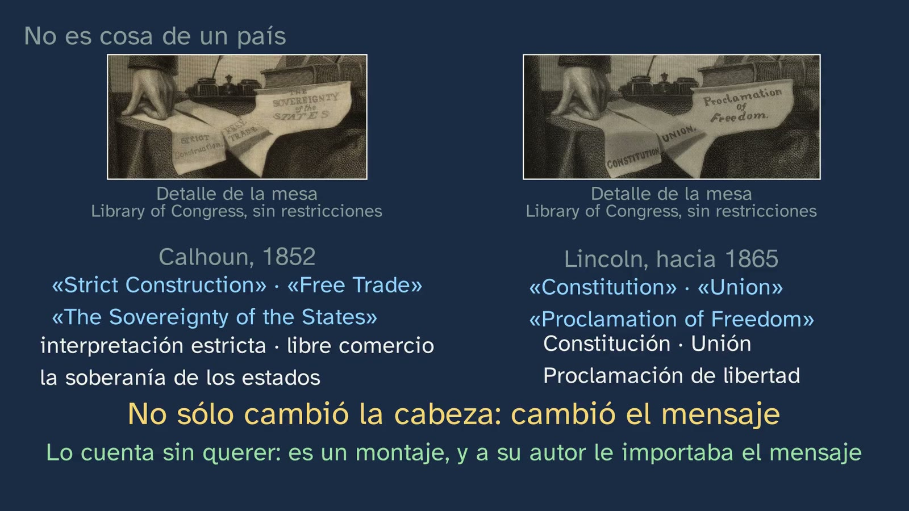

¿Cuál de las dos fotos miente?
En pocas palabras
La clase abre la materia con una pregunta de hoy: si una máquina fabrica en segundos la foto de algo que nunca pasó, ¿cómo sabemos qué pasó de verdad? La responde con una foto de hace un siglo. Moscú, 5 de mayo de 1920: Lenin arenga a las tropas que salen hacia el frente de Polonia, y en la escalera de la tribuna está Trotski. En otra copia de la misma foto, Trotski ya no está, y el hombre que tenía detrás lleva un abrigo imposible. El alumnado predice cuál es la original y aprende cómo se sabe: contrastando, con una tercera foto del mismo discurso que guarda un archivo de Moscú y con la huella del propio retoque. Después viene la idea que da la vuelta a la clase: la foto retocada miente sobre 1920, pero dice la verdad sobre quien la retocó (Marc Bloch: «una mentira, en cuanto tal, es a su manera un testimonio»). De ahí salen las cuatro preguntas que se hacen a toda fuente (quién la hizo, cuándo y dónde, para qué y para quién), dos gestos (contexto y contraste), la diferencia entre hecho e interpretación y un matiz que pocos libros explican: una fuente es primaria o no según la pregunta que le hagas. El error típico sale de un estudio real (Wineburg, 1991): un alumno con la nota máxima eligió el libro de texto como el documento más fiable «porque sólo cuenta los hechos». Antes de cerrar, un grabado de Lincoln que lleva el cuerpo de otro político, para que quede claro que manipular imágenes no es cosa de un solo país, sin equiparar dos casos que no son iguales.
Objetivo. Al terminar, el alumnado sabrá interrogar una fuente con cuatro preguntas (quién la hizo, cuándo y dónde, para qué y para quién), contrastarla con otras, distinguir en ella el hecho de la interpretación y explicar por qué una fuente falsa también es una prueba verdadera… de otra cosa.
Currículo
Real Decreto 243/2022, Historia del Mundo Contemporáneo, materia de modalidad de 1.º de Bachillerato en Humanidades y Ciencias Sociales (texto consolidado del BOE, comprobado el 29/09/2026).
| Elemento | Qué dice el decreto | Dónde se trabaja |
|---|---|---|
| Saber básico (bloque A, «Sociedades en el tiempo») | «El trabajo del historiador: fuentes históricas, historiografía y narrativas del pasado. […]» | Toda la clase: fuente primaria y secundaria, las cuatro preguntas, contexto y contraste; la historiografía, con Bloch y con el estudio de Wineburg; y una narrativa del pasado reescrita a golpe de retoque |
| Saber básico (bloque C, «Compromiso cívico») | «Ciudadanía ética digital: […] Prevención y defensa ante la desinformación y la manipulación.» | El gancho (las imágenes fabricadas de hoy), la foto retocada y la pregunta abierta. Aquí sólo se asoma: la materia vuelve a ello más adelante |
| Competencia específica 2 | «Tomar conciencia del grado de violencia, barbarie y destrucción de los conflictos de la Edad Contemporánea, a través del empleo de fuentes históricas fiables, la lectura de textos historiográficos y la elaboración de argumentos propios que prevengan la manipulación de la información, para afrontar acontecimientos traumáticos de nuestro pasado reciente, evitar la repetición de hechos semejantes, reconocer a las víctimas y defender la aplicación del principio de Justicia Universal.» | Su parte de método: fuentes fiables, textos historiográficos (Bloch) y argumentos que previenen la manipulación. La violencia asoma en las biografías (Trotski, Bloch), pero su estudio llega más adelante en la materia |
| Competencia específica 5 | «Identificar y reconocer los principales retos del siglo XXI a través de procesos avanzados de búsqueda, selección y tratamiento de la información, el contraste y la lectura crítica de fuentes, para entender el fenómeno histórico de la globalización, su repercusión en el ámbito local y planetario y en la vida cotidiana de las personas, y mostrar la necesidad de adoptar compromisos ecosociales para afrontar los Objetivos de Desarrollo Sostenible.» | El contraste y la lectura crítica de fuentes, y un reto del siglo XXI: las imágenes que cualquiera puede fabricar |
| Competencia específica 7 | «Interpretar la función que han desempeñado el pensamiento y las ideologías en la transformación de la realidad desde los orígenes de la Edad Contemporánea hasta la actualidad, a través de la aproximación a la historiografía y a los debates sobre temas claves de la historia, para valorar críticamente los distintos proyectos sociales, políticos y culturales generados, las acciones llevadas a cabo y las experiencias vividas, desde la perspectiva ética contenida en la Declaración Universal de los Derechos Humanos.» | La aproximación a la historiografía: Bloch y su oficio de historiador; y un Estado que reescribe su pasado |
| Criterio 2.1 | «Tomar conciencia del grado de violencia, barbarie y destrucción alcanzado por los conflictos ocurridos en el mundo contemporáneo, así como de las causas de las conflagraciones bélicas y de las múltiples transformaciones que se producen en los contendientes, a través del empleo de fuentes históricas fiables y del uso de datos contrastados, valorando el impacto social y emocional que supone el uso de la violencia y el papel de las instituciones internacionales que velan por la paz y la mediación.» | Sólo su parte de método: la tercera foto del archivo y la huella del retoque, dos pruebas independientes; cada fecha de la clase, contrastada |
| Criterio 5.1 | «Analizar críticamente el fenómeno histórico de la globalización y su repercusión en el ámbito local y planetario, valiéndose del manejo de distintas fuentes de información y de una adecuada selección, validación, contraste y tratamiento de las mismas, previniendo la desinformación y considerando el emprendimiento, la innovación y el aprendizaje permanente como formas de afrontar los retos de un entorno económico, social y cultural en constante cambio.» | Sólo su parte de método: validar y contrastar fuentes, previniendo la desinformación. Las cuatro preguntas y el error «primaria es verdadera» |
| Criterio 7.2 | «Abordar críticamente los principales temas clave de la historia y de la actualidad a través de la aproximación a las principales corrientes historiográficas y a los usos que se hacen de la historia, valorando críticamente los principales proyectos sociales, políticos y culturales que han tenido lugar en la historia contemporánea desde la perspectiva ética contenida en la Declaración Universal de los Derechos Humanos.» | Los usos que se hacen de la historia: borrar a alguien de una foto, y cambiar el mensaje de un retrato. Y una corriente historiográfica: Bloch cofundó en 1929, con Lucien Febvre, la revista Annales (la clase no lo dice; es un buen puente) |
Lo que hay que traer de la ESO: lo justo, y el decreto de la ESO lo da. Geografía e Historia es obligatoria en los cuatro cursos (Real Decreto 217/2022, artículos 8 y 9). En 1.º y 2.º, el criterio 1.2 pide «localizando y analizando de forma crítica fuentes primarias y secundarias como pruebas históricas», y un saber, «Las fuentes históricas y arqueológicas como base para la construcción del conocimiento histórico». En 3.º y 4.º vuelven «Las fuentes históricas como base para la construcción del conocimiento sobre el pasado contemporáneo. Contraste entre interpretaciones de historiadores» y la «evaluación y contraste de la fiabilidad de las fuentes. El problema de la desinformación». Por eso la clase da por sabida la distinción entre fuente primaria y secundaria (la recupera en el minuto 0:41) y leer una línea del tiempo. El contexto histórico (quién era Lenin, quién Stalin, la revolución de 1917) lo da la propia clase en una línea del tiempo: el decreto de la ESO no nombra la revolución rusa, y esta materia la estudia a fondo más adelante, en los saberes «La lucha por la libertad, cambio y revolución en la época contemporánea: de las revoluciones burguesas a las revoluciones socialistas» y «Acción colectiva, movimiento de masas y liderazgo político en el siglo XX: nacimiento y funcionamiento de los regímenes democráticos y totalitarios».
Cómo está construida la clase
Capítulos del vídeo
Once minutos y medio, en diez capítulos. Sigue las bases formativas del canal y lo que el decreto pide a esta materia: la metodología histórica «obliga al alumnado al uso riguroso y crítico de las fuentes», y el contraste y la interpretación de la información «permiten entender la historia como un ámbito de conocimiento en construcción, en continua revisión y cambio» (introducción de la materia). Por eso la clase no cuenta cómo se trabaja con fuentes: lo hace con una, delante del alumno, y después pone nombre a lo que ha hecho. Es la primera de las seis del tema; la segunda es el primer taller de historia, en un archivo.
| Capítulo | Qué pasa | Por qué así |
|---|---|---|
| Qué vamos a ver | Tristán saluda y presenta el tema en el mapa de sus seis clases; una es un taller de historia (la lupa). El gancho, a cámara: hoy una máquina fabrica en segundos la foto de algo que nunca pasó; ¿cómo sabemos qué pasó de verdad? | Saber dónde se está y adónde se va ordena lo que se aprende. La pregunta es de hoy; la respuesta llega con una foto de hace un siglo. |
| Lo que ya sabes | ¿Qué es una fuente primaria? ¿Y una secundaria? Pausa. La definición de la ESO: primaria, de la época que estudiamos; secundaria, hecha después a partir de las primarias. «Guárdalo: dentro de un rato le daremos una vuelta.» | Recuperar lo sabido, y dejar sembrada una definición que la clase va a afinar. |
| Dos fotos | Moscú, 5 de mayo de 1920: dos copias de la misma foto. ¿Qué ha cambiado? ¿Cuál es la original? Pausa. Trotski, jefe del Ejército Rojo, en la escalera de la tribuna; en la otra, no está, y un abrigo larguísimo tapa el hueco. | Predecir antes de ver: el alumno se compromete con una respuesta, y mirar con atención ya es parte del oficio. |
| ¿Cómo lo sabemos? | No por intuición: comparando. Una tercera foto del mismo discurso, en el Archivo Estatal Ruso de Historia Sociopolítica (RGASPI, fondo 393, inventario 1, expediente 205), que no se puede publicar sin permiso, y se dice; y la huella del retoque. Dos pistas distintas: contrastar. Para y piensa: ¿para qué iba alguien a borrar a un hombre de una foto? | La pregunta del canal, con el documento. Decir lo que no se puede enseñar también es honestidad. |
| El hombre que sobraba | Una línea del tiempo: 1917, 1924 (muere Lenin), 1927 (expulsado del partido), 1929 (del país), 1940 (asesinado en México por orden de Stalin). «La explicación más probable»: un enemigo de Stalin no podía aparecer junto a Lenin, ni siquiera en el pasado. Y muchos desaparecieron de las fotos. | El contexto antes que la interpretación, y la interpretación con su grado de certeza. |
| Lo que cuenta sin querer | ¿A la basura, porque miente? No: miente sobre 1920 y dice la verdad sobre quien la retocó. Bloch: «una mentira, en cuanto tal, es a su manera un testimonio» (p. 43) y «lo que nos deja entender, sin haber querido decirlo» (p. 25). Su vida: el libro escrito en plena guerra, la Resistencia, la Gestapo, el fusilamiento, el libro inacabado que da título al tema. Tristán, a cámara: una fuente no se cree, ni se tira; se interroga. | La idea que da la vuelta a la clase, en palabras de su autor y con su página. La vida de Bloch sitúa su libro en su contexto, que es lo mismo que se pide a cualquier fuente. |
| Cuatro preguntas | Quién la hizo, cuándo y dónde, para qué y para quién, probadas con la foto retocada. Hecho (desapareció: lo vemos) e interpretación (para qué: bien apoyada en el contexto); una pregunta sin respuesta también es un dato. Contexto y contraste. Y la vuelta prometida: la foto retocada no sirve para saber quién estaba en Moscú en 1920, pero es una fuente primaria excelente de cómo se reescribía el pasado. | Primero la intuición, después el método; un ejemplo resuelto entero, con la foto que el alumno ya conoce. La definición del principio se afina, no se cambia por otra. |
| Cómo leen los historiadores | Wineburg (1991): ocho historiadores y ocho alumnos brillantes de último curso, pensando en voz alta ante los mismos documentos. Miraban de dónde venía un documento antes de leerlo: los historiadores, en el 98 % de los casos; los alumnos, en el 31 %. No sabían más: los distinguía el método. El error típico: un alumno con la nota máxima eligió el libro de texto como el documento más fiable. | El error típico, con la investigación que lo documenta, y desmontado con lo que la clase ya ha enseñado: una foto de la época puede mentir. «Tampoco esta clase» se libra de las cuatro preguntas. |
| No es cosa de un país | El grabado de Lincoln publicado en Nueva York hacia 1865, según la Biblioteca del Congreso, que lo conserva: la cabeza de Lincoln sobre el cuerpo de John Calhoun, de un grabado de 1852. Para y piensa: ¿qué más cambió en la mesa, y para qué? Los papeles. No conocemos ningún escrito que diga para qué, pero la fuente cuenta sin querer que es un montaje y que a su autor le importaba el mensaje. ¿Es lo mismo que lo de Trotski? No, y se dice por qué. | Un ejemplo con huecos, que resuelve el alumno. La comparación, sin equiparar: un Estado que borra a un condenado no es un editor que publica un retrato. |
| Para practicar y seguir pensando | Recapitulación con Bloch: los textos «sólo hablan cuando se sabe interrogarlos» (p. 26). Tres ejercicios, uno con otra pareja de fotos soviéticas; la pregunta abierta sobre las imágenes fabricadas; y el anuncio de la clase 2, el primer taller. | Práctica espaciada: las soluciones abren la clase siguiente. La pregunta abierta está también en los comentarios del vídeo. |

Plan de una sesión de 50 minutos
| Minutos | Qué se hace |
|---|---|
| 0–5 | Sin vídeo: la pregunta del gancho, por escrito y en una frase. Si una máquina fabrica en segundos la foto de algo que nunca pasó, ¿cómo sabemos qué pasó de verdad? Se guarda para el final (está en la hoja). |
| 5–12 | Vídeo de 0:00 a 2:46. Parar en 0:54 (¿qué es una fuente primaria?: medio minuto para contestar por escrito, y seguir para compararlo con el vídeo), en 1:40 (¿qué ha cambiado y cuál es la original?; que cada pareja diga, sobre todo, cómo lo averiguaría) y en 2:46 (¿para qué borrar a alguien de una foto?; una hipótesis por pareja, que el profesor apunta en la pizarra sin corregirla). |
| 12–19 | Vídeo de 2:46 a 6:47: la caída de Trotski, Bloch, Tristán a mitad, las cuatro preguntas y la vuelta de la fuente primaria. Volver a las hipótesis de la pizarra: ¿cuál se sostiene con la línea del tiempo? ¿Cuál es un hecho y cuál una interpretación? |
| 19–24 | Vídeo de 6:47 a 8:21: el estudio de Wineburg y el error típico. En voz alta: ¿qué documento habríais puesto vosotros el primero, y por qué? |
| 24–39 | La actividad: los dos grabados, interrogados antes de oír lo que dice la clase de ellos. |
| 39–44 | Vídeo de 8:21 a 9:50: cada pareja compara lo que encontró con lo que dice el vídeo (su pausa de 8:57 ya la han hecho). ¿Es lo mismo que lo de Trotski? |
| 44–50 | Vídeo de 9:50 al final (11:29). Releer la frase del principio: ¿la cambiarías? Los ejercicios, para casa con la hoja. |
Errores típicos y cómo se tratan
Los tres primeros están documentados por la investigación didáctica, con su estudio; los otros dos son confusiones que el diseño prevé.
- «La fuente primaria dice la verdad», y su pariente, «el libro de texto sólo cuenta los hechos». Es el que la clase trata de frente (7:29), con el estudio de Wineburg, sobre documentos de la batalla de Lexington (1775): «Darrel», un alumno con una nota media de 4,0, la máxima, «rated the textbook as the most trustworthy of the eight documents» porque era «just reporting the facts» (Wineburg, 1991, p. 501); los historiadores pusieron ese mismo fragmento el último, «even less trustworthy than an excerpt from a fictional work», la novela April Morning de Howard Fast, porque contradecía los relatos de primera mano de los dos bandos, el británico y el americano (p. 500). La clase lo desmonta con lo que el alumno acaba de ver: una foto de la época puede mentir. «Primaria» no quiere decir «verdadera»; en palabras de la biblioteca de la Universidad de Cornell, «calling an item a primary source does not mean that the perspective presented by it is automatically true or accurate». Y la otra mitad, que conviene no perder: una fuente secundaria no es peor por ser secundaria; un buen libro de historia es de fiar porque dice de dónde saca cada cosa, y eso se puede comprobar.
- «Si miente, no sirve: a la basura». Es la trampa de quien ya ha aprendido a desconfiar. Peter Lee la describe así: «Students who decide that we cannot rely on reports because they are biased or give only opinions are almost back to square one» (quien decide que no podemos fiarnos de los relatos porque son parciales o sólo dan opiniones ha vuelto casi a la casilla de salida; Lee, 2005, p. 37). Y añade la salida: sólo cuando el alumnado entiende que los historiadores pueden hacer a las fuentes preguntas para las que no se hicieron se libra de depender de testigos veraces (p. 37). Es la idea de Bloch, y la clase la da en el capítulo «Lo que cuenta sin querer» (3:30): la foto retocada miente sobre 1920 y es una prueba de primera mano de cómo se reescribía el pasado.
- «Primaria» y «secundaria», como etiquetas fijas del documento. La definición de la ESO («de la época que estudiamos») ya lleva dentro la respuesta, pero casi nadie la lee así. La clase lo hace en 6:12: la misma foto no sirve para saber quién estaba en Moscú en 1920 y es una fuente primaria excelente de cómo se reescribía el pasado. La biblioteca de Cornell lo dice igual: «what counts as a primary source is also determined by what questions you're asking». Y en el modelo de progresión de las ideas del alumnado sobre la prueba histórica de Ashby, Lee y Shemilt (2005), la idea de que «reliability is not a fixed property of a source, and the weight we can place on any piece of evidence depends on what questions we ask of it» llega en el quinto de sus seis niveles (p. 167). El ejercicio 1 lo pone a prueba.
- Dar la interpretación por un hecho, o al revés. Cuando se pregunta por qué desapareció Trotski, muchos responden «porque Stalin mandó borrarlo», como si fuera un dato. No conocemos ninguna orden escrita sobre esta foto: lo que sabemos es que, tras su caída, su imagen se eliminó de las reproducciones que se difundían (Newseum, 1999), y eso apoya la interpretación, que la clase da con su grado: «la explicación más probable», «casi con seguridad». Conviene separarlo de otro dato que sí está documentado: que Trotski fue asesinado en 1940 por orden de Stalin. El error contrario es pensar que, sin orden escrita, no se puede decir nada. Los historiadores argumentan con grados de certeza y dicen cuál es cuál. El ejercicio «¿Hecho o interpretación?» de la hoja lo practica.
- «Manipular imágenes es cosa de dictaduras», o al revés, «todos hacen lo mismo». El grabado de Lincoln (8:21) desmonta lo primero: en Nueva York también se publicó un retrato con el cuerpo de otro. La clase desmonta enseguida lo segundo (9:31): no es lo mismo un Estado que borra de la historia a un condenado que un editor de grabados que publica un retrato. Lo que tienen en común es que la imagen enseña algo que no pasó así, y que las cuatro preguntas sirven igual. Si el debate deriva hacia qué régimen es peor, conviene devolverlo al método: la clase compara fuentes, no sistemas políticos, y juzgar el pasado es la clase 6 del tema.

Preguntas y soluciones
Para y piensa (dentro del vídeo)
- ¿Qué es una fuente primaria? ¿Y una secundaria? (0:41) Lo que responde el vídeo enseguida: una fuente primaria es de la época que estudiamos (una carta, una foto, un periódico, una ley); una secundaria la hace alguien después, a partir de las primarias (un libro de historia, un documental, esta misma clase). Valen respuestas como «la original» o «la de un testigo», pero conviene subrayar la clave, «de la época que estudiamos», porque es la que permite la vuelta de 6:12.
- Parecen la misma foto, pero no son iguales. ¿Qué ha cambiado? ¿Y cuál crees que es la original? (1:26) En la de la izquierda, en la escalera, junto a la tribuna, hay un hombre de uniforme, con gorra y bigote: León Trotski, el jefe del Ejército Rojo. En la de la derecha no está, y el hombre que tenía detrás lleva un abrigo larguísimo que tapa el hueco. La original es la de la izquierda. Las mejores respuestas no se quedan en «parece más antigua»: señalan una huella (el abrigo) y, mejor aún, dicen cómo lo comprobarían (buscando otra foto del mismo momento). El vídeo lo hace en 2:00: una tercera foto del mismo discurso, tomada en otro instante, en el RGASPI (fondo 393, inventario 1, expediente 205), en la que Trotski también está en la escalera. El profesorado puede verla en el portal del archivo (enlace en las fuentes); lo que el archivo no permite es publicarla sin su permiso, y por eso la clase no la enseña. Dos avisos, por si el alumnado busca por su cuenta: circula otra versión, posterior, en la que desaparecen también Kámenev y otros, que la clase no enseña porque no hay copia libre; y algunas copias fechan la foto el 1 de mayo, un error frente a la ficha del archivo y a las Obras completas de Lenin, que dan el 5 de mayo de 1920.
- ¿Para qué iba alguien a borrar a un hombre de una foto? (2:32) El vídeo da el contexto (2:46): Trotski había sido, con Lenin, uno de los jefes de la revolución de 1917; Lenin murió en 1924, y en la lucha por sucederle Trotski perdió frente a Stalin; lo expulsaron del partido en 1927, del país en 1929, y en 1940 lo asesinaron en México por orden de Stalin. «La explicación más probable» es que un enemigo de Stalin no podía aparecer junto a Lenin, ni siquiera en el pasado; y no fue el único (King, 1997). Van bien las hipótesis del tipo «para borrarlo de la historia» o «porque había caído en desgracia»; van mejor si dicen que son hipótesis y qué las confirmaría.
- ¿Hay que tirar la foto retocada a la basura, porque miente? (3:30) No. Miente sobre 1920, porque Trotski estaba allí; pero dice la verdad sobre otra cosa: que después alguien necesitó borrarlo. Bloch: «Una mentira, en cuanto tal, es a su manera un testimonio» (Apologie pour l'histoire ou Métier d'historien, cap. III, p. 43 de la edición de 1952; en el original, «Surtout un mensonge, en tant que tel, est à sa façon un témoignage»). Y lo que más interesa a los historiadores, incluso en los documentos hechos a propósito para contar algo, es «lo que nos deja entender, sin haber querido decirlo» (cap. II, p. 25: «ce qu'il nous laisse entendre, sans avoir souhaité le dire»). Las traducciones son nuestras. Si alguien pregunta quién fusiló a Bloch: la clase no lo dice, porque las fuentes consultadas no coinciden (militares alemanes, según el diccionario biográfico Maitron; hombres de la Gestapo, según la Wikipedia en francés). Es un buen ejemplo de pregunta sin respuesta segura.
- Busca en la mesa qué más cambió, y piensa para qué. (8:42) Los tres papeles. En el grabado de Calhoun decían «Strict Construction», «Free Trade» y «The Sovereignty of the States» (interpretación estricta, libre comercio, la soberanía de los estados), las ideas que él defendía; en el de Lincoln, «Constitution», «Union» y «Proclamation of Freedom». El grabador no sólo cambió la cabeza: cambió el mensaje. ¿Para qué? No conocemos ningún escrito que lo diga: ni la Biblioteca del Congreso ni las demás fuentes consultadas dan la intención del grabador. Lo que sí cuenta la fuente sin querer: que es un montaje, y que a quien lo hizo le importaba el mensaje, porque se tomó el trabajo de cambiarlo.

De la hoja del alumnado
- Antes de empezar: ¿cómo sabemos qué pasó de verdad? No hay respuesta correcta: es su punto de partida. Al final de la clase la releen. Las mejores revisiones añaden algo del método (saber de dónde viene la imagen, buscar otra fuente independiente, distinguir lo que se ve de lo que se interpreta); cambiar de idea por una buena razón es un acierto.
- Mientras ves el vídeo. Son los «para y piensa» de arriba, en el orden del vídeo.
- Las cuatro preguntas, con la foto retocada. La tabla de la clase (5:07): quién la hizo, no sabemos su nombre (de la original, tampoco hay certeza: se atribuye al fotógrafo Grigori Goldstein, pero la ficha del archivo no lo nombra, y por eso el rótulo del vídeo dice «atribuida»); cuándo y dónde se retocó, no sabemos el año, pero sí que fue después de la caída de Trotski (las fuentes consultadas discrepan: los años treinta, la época de Stalin, un álbum de 1970); para qué, casi con seguridad, para que nadie lo recordara junto a Lenin, una interpretación sin orden escrita conocida, apoyada en el contexto; para quién, para quien la viera sin conocer la original; y lo que cuenta sin querer, que después alguien necesitó borrarlo: es una prueba de primera mano de cómo se reescribía el pasado. La columna del grabado de Lincoln es la actividad (ver abajo, con sus respuestas). Merece la pena valorar a quien marca cómo sabe cada respuesta y deja escrito «no se sabe» cuando no se sabe: es un dato.
- ¿Hecho o interpretación? 1) «En la foto retocada no está Trotski»: hecho; se ve comparando las dos copias. 2) «La foto se retocó para que nadie recordara a Trotski junto a Lenin»: interpretación bien apoyada; no hay orden escrita conocida, pero el contexto la sostiene. 3) «Trotski fue expulsado de la Unión Soviética en 1929»: hecho, con fecha y confirmado en varias fuentes. 4) «Stalin dio la orden de retocar esta foto»: interpretación sin apoyo; no conocemos ninguna orden sobre esta foto, y que Stalin ordenara asesinar a Trotski no prueba quién ordenó este retoque. 5) «En la mesa del grabado de Lincoln se lee "Union"»: hecho; se lee en la lámina. 6) «El grabador reutilizó el cuerpo de Calhoun para ahorrarse trabajo»: interpretación sin apoyo en las fuentes consultadas; es posible, pero ninguna dice por qué lo hizo, y habría que buscar pruebas. Los ítems 4 y 6 son los que más enseñan: suenan a dato y no lo son.

Para practicar (las soluciones abren la clase 2)

-
Un libro de texto de 1950, ¿es una fuente primaria o secundaria? Depende de lo que quieras averiguar con él. Si lo que estudias es el tema que trata (la Revolución francesa, por ejemplo), es secundaria: está escrito después, a partir de otras fuentes, y además es viejo, así que conviene contrastarlo con investigaciones más recientes. Si lo que estudias es cómo se enseñaba la historia en 1950 (qué se contaba al alumnado, qué se callaba, con qué palabras), es primaria: es de la época que estudias. Es el mismo razonamiento que la foto retocada (6:12). Criterios: las dos respuestas, cada una con la pregunta que la hace verdadera; la definición bien usada («de la época que estudias»); y, para una nota alta, aplicarle las cuatro preguntas (quién lo escribió, para quién, quién decidía lo que entraba) o decir qué podría contar sin querer, como lo que no menciona. Ejemplo: «Si quiero saber cómo fue la Revolución francesa, es secundaria, y de 1950: la contrastaría con libros de ahora. Si quiero saber qué aprendían los alumnos de 1950, es primaria, porque es de esa época; y me interesaría tanto lo que dice como lo que se calla».
-
Otra pareja de fotos soviéticas (la original, de abril de 1937): ¿qué ha cambiado? ¿Qué le preguntarías para averiguar por qué? Lo que ha cambiado: en la de arriba, la original, caminan junto al canal Moscú-Volga Voroshílov, Mólotov, Stalin y, a la derecha de la foto, un hombre joven de uniforme y gorra: Nikolái Yezhov. En la de abajo, Yezhov ha desaparecido, y en su lugar hay agua del canal (Newseum, 1999; Tate Etc., n.º 8, 2006). Las preguntas: ¿quién era el hombre borrado? (Yezhov dirigió la policía política soviética, el NKVD, de septiembre de 1936 a noviembre de 1938; fue detenido el 10 de abril de 1939 y fusilado en febrero de 1940; el día exacto varía según la fuente, del 2 al 6); ¿qué le pasó después de abril de 1937?; ¿quién retocó la foto, cuándo y dónde se publicó la retocada? (las fuentes consultadas no lo dicen: igual que con Trotski, «no se sabe» es un dato); ¿para qué? (interpretación: el mismo patrón que con Trotski; quien cae en desgracia desaparece de las fotos); ¿para quién?; y ¿qué otras fotos suyas cambiaron? Criterios: el cambio, descrito con precisión (quién falta y qué lo sustituye); al menos tres preguntas bien formuladas, entre ellas las de quién era y qué le pasó; y separar lo que se ve (hecho) de por qué pudo hacerse (interpretación). No hace falta saber quién era Yezhov para hacer buenas preguntas: saber preguntar es el ejercicio. Si alguien busca la foto en Wikimedia Commons, verá que el título del fichero dice «Volga–Don Canal»: según Jansen y Petrov (2002, p. vii) y el Newseum, es el canal Moscú-Volga. Hasta un archivo abierto se equivoca en un rótulo, y eso también se contrasta.
-
Busca en casa una foto antigua de tu familia, hazle las cuatro preguntas y apunta lo que te cuenta sin querer. Es abierta: no tiene una única respuesta, pero sí respuestas mejores y peores. Criterios: las cuatro preguntas contestadas, cada una diciendo cómo lo sabe (está escrito en la foto o por detrás, me lo ha contado alguien, lo deduzco de un detalle, o no se sabe); lo que es hecho, separado de lo que es interpretación; al menos una cosa que la foto cuenta sin querer (la ropa, el lugar, quién está y quién falta, si es posada o espontánea, qué se decidió fotografiar); y, para una nota alta, un contraste con otra fuente (el testimonio de un familiar, una fecha escrita, otra foto del mismo día). Un ejemplo inventado de buena respuesta: «Una foto en blanco y negro de la boda de mis abuelos. ¿Quién la hizo? Por detrás lleva el sello de un estudio de fotografía: un fotógrafo profesional. ¿Cuándo y dónde? Mi abuela dice que en 1968, en su pueblo; no está escrito, así que es su testimonio, no un dato de la foto. ¿Para qué? Para recordar la boda y regalar copias (me lo contó ella). ¿Para quién? Para la familia. Lo que cuenta sin querer: todos van muy arreglados y posan; creo que era una foto para enseñar, no para contar un día normal, pero eso es interpretación mía. Y no salen dos hermanos de mi abuelo: la foto no dice por qué; mi abuela dice que ya se habían ido a trabajar fuera». Dos cuidados: la foto se queda en casa (basta con describirla; no hace falta traer ni compartir imágenes de la familia), y quien no tenga fotos familiares puede usar una foto antigua de su pueblo o su barrio de un archivo o una hemeroteca digital, que es lo que hará en la clase 2.

Para seguir pensando. Hoy cualquiera puede fabricar la foto de algo que nunca pasó. ¿Cómo sabrán los historiadores del futuro qué pasó de verdad en nuestra época? No tiene respuesta de libro, y ni el vídeo ni esta ficha dan la suya. Algunas pistas para orientar el debate sin cerrarlo:
- Las dos pistas del vídeo. Para saber cuál era la original había dos: la huella del retoque (el abrigo imposible) y otra fuente independiente (la tercera foto del archivo). ¿Cuál de las dos resistiría mejor una imagen fabricada hoy? ¿Por qué?
- Separar dos preguntas. Una es cómo sabremos si una imagen concreta es auténtica. La otra es qué les contarán a los historiadores del futuro nuestras imágenes falsas. Si «una mentira, en cuanto tal, es a su manera un testimonio», ¿de qué serán testimonio las de hoy? ¿De quién las hizo, de qué quería que creyéramos?
- Qué pesa más. ¿Bastará con una técnica que certifique de dónde viene cada imagen? ¿O pesarán más el método y los archivos que guardan los documentos con su procedencia (la clase 2)? ¿Y qué pasa si, por miedo a lo falso, dejamos de creer también lo verdadero? Es el error 2, en versión digital. El profesor modera y no da su veredicto.
- Un dato, no una opinión: esta clase la escribió una IA y la revisó una persona, y sus fuentes están en la descripción del vídeo. ¿Qué responderían las cuatro preguntas sobre ella?

Una actividad para el aula
Dos grabados, interrogados antes de oír la clase (unos 15 minutos, en parejas, antes de ver el capítulo «No es cosa de un país», que empieza en 8:21). Es el gesto de los talleres de historia en pequeño: el alumno interroga el documento antes de oír la interpretación.
Material: los dos grabados de la Biblioteca del Congreso de Estados Unidos, proyectados o impresos, que se pueden descargar enteros y sin restricciones conocidas de publicación: «Abraham Lincoln», de William Pate, y «John C. Calhoun», de A. H. Ritchie (enlaces en las fuentes). Sin decir todavía qué son ni que están relacionados. Y la hoja del alumnado (su tabla de las cuatro preguntas).
- Mirar sin interpretar (3 minutos). La rutina «¿qué ves?, ¿qué piensas?, ¿qué te preguntas?» del Project Zero de Harvard (Ritchhart, Church y Morrison, 2011): cada pareja apunta primero sólo lo que se puede señalar con el dedo en cada grabado, y después qué piensa y qué se pregunta. Casi todas descubren solas que el cuerpo, la mano y la mesa son los mismos; si no, basta con pedir que comparen la postura.
- Las cuatro preguntas (5 minutos; criterio 5.1). Con el grabado de Lincoln, cada pareja rellena la columna de su tabla y marca cómo sabe cada respuesta: lo veo (V), lo dice una fuente (F), lo deduzco del contexto (D) o no se sabe (?). El profesor da los datos del catálogo sólo a quien los pida: «Nueva York, publicado por William Pate, [1865?]».
- El catálogo también es una fuente (3 minutos). El profesor lee la nota de la Biblioteca del Congreso: «The head of Abraham Lincoln is superimposed on the figure and background of an earlier print by A.H. Ritchie showing John C. Calhoun, 1852» (la cabeza de Lincoln está superpuesta a la figura y al fondo de un grabado anterior de A. H. Ritchie con John C. Calhoun, de 1852). Preguntas: ¿quién escribe esa nota y cómo lo sabe? ¿Qué dice la interrogación de «[1865?]»? (que la fecha no es segura). Y una que la clase no hace: Lincoln fue asesinado en abril de 1865. ¿Se publicó el grabado antes o después? Las fuentes consultadas no lo dicen: se apunta como pregunta sin respuesta.
- Hecho o interpretación (3 minutos; criterio 7.2). Cada pareja escribe dos frases sobre el grabado de Lincoln, un hecho y una interpretación, y las marca. Por ejemplo: «Hecho: en la mesa se lee "Union". Interpretación: quien lo hizo quería presentar a Lincoln como defensor de la Unión».
- Puesta en común (1–2 minutos). El profesor recoge en la pizarra las hipótesis sobre el para qué, sin dar ninguna por buena, y pregunta de cada una qué prueba la confirmaría. Después, el vídeo de 8:21 a 9:50.
La columna de Lincoln, resuelta: quién, William Pate, grabador y editor de Nueva York, según el catálogo (F), sobre una figura grabada antes por A. H. Ritchie; cuándo y dónde, Nueva York, hacia 1865, con interrogación (F), y si fue antes o después del asesinato, no se sabe (?); para qué, no se sabe (?), y todo lo que se diga es hipótesis; para quién, para el público que viera o comprara la lámina, una interpretación razonable porque la publica un editor (D); lo que cuenta sin querer, que es un montaje y que a quien lo hizo le importaba el mensaje, porque cambió los papeles (V y D).
Para el profesorado: no se sabe para qué se hizo el montaje: ni la Biblioteca del Congreso ni las demás fuentes consultadas dan la intención del grabador, y esa es la mejor lección de la actividad. Saldrán hipótesis (vender un retrato del presidente, un homenaje tras su muerte, ahorrarse el trabajo de dibujar un cuerpo nuevo); todas valen como hipótesis y ninguna como hecho. Muchos relacionarán «Proclamation of Freedom» con la Proclamación de Emancipación, que Lincoln promulgó el 1 de enero de 1863: es una lectura razonable, pero es una interpretación, porque la lámina sólo dice «Proclamation of Freedom». Tampoco hay una única fecha para el grabado: la Biblioteca del Congreso lo fecha «[1865?]» y Hany Farid, en su recopilación «Photo Tampering Throughout History», «circa 1860»; por eso la clase atribuye la fecha a la Biblioteca. Y si alguien concluye que «es lo mismo que lo de Trotski», el vídeo responde en 9:31: no lo es, aunque las cuatro preguntas sirvan igual.

Otra opción: rastrear una foto (15 minutos, en parejas, con un ordenador o un móvil; mejor después de corregir el ejercicio 2, y trabaja los criterios 2.1 y 5.1). Cada pareja recibe una imagen con el pie con el que circula y sigue cuatro pasos: copiar el pie tal cual y decir dónde circula; buscar qué archivo o qué institución guarda el original y qué dice su ficha; dar un veredicto (el pie es correcto; es correcto, pero incompleto; es falso; o no se puede saber); y preguntarse quién lo difunde y para qué. Cuatro casos comprobados, con su solución:
- «Lenin habla a las tropas, 1 de mayo de 1920»: falso en la fecha. La ficha del RGASPI (fondo 393, inventario 1, expediente 205) y las Obras completas de Lenin (vol. 31, pp. 127–128) dan el 5 de mayo de 1920.
- «Stalin y Yezhov en el canal Volga-Don» (el título del fichero en Wikimedia Commons): falso en el lugar. Según Jansen y Petrov (2002, p. vii) y el Newseum (1999), es el canal Moscú-Volga, en abril de 1937.
- «Retrato de Abraham Lincoln»: correcto, pero incompleto. Es un grabado compuesto: la cabeza de Lincoln sobre el cuerpo de un grabado de Calhoun de 1852 (Biblioteca del Congreso), y su fecha es dudosa.
- «La foto de Lenin sin Trotski, retocada por orden de Stalin en los años treinta»: no se puede saber. No conocemos ninguna orden escrita sobre esta foto, y las fuentes consultadas no coinciden en cuándo se retocó.
Fuentes
- Real Decreto 243/2022, texto consolidado (BOE): https://www.boe.es/buscar/act.php?id=BOE-A-2022-5521.
- La ESO: Real Decreto 217/2022, texto consolidado (BOE): https://www.boe.es/buscar/act.php?id=BOE-A-2022-4975 (artículos 8 y 9, y Geografía e Historia en el anexo II).
- La foto de Lenin del 5 de mayo de 1920: ficha del Archivo Estatal Ruso de Historia Sociopolítica (RGASPI, fondo 393, inventario 1, expediente 205): https://lenin.rusarchives.ru/dokumenty/vi-lenin-s-tribuny-na-ploshchadi-sverdlova-vystupaet-s-rechyu-na-parade-voysk; Lenin, Collected Works, vol. 31, pp. 127–128: https://www.marxists.org/archive/lenin/works/1920/may/05.htm.
- D. King, The Commissar Vanishes: The Falsification of Photographs and Art in Stalin's Russia (1997), y su exposición en el Newseum (1999): https://web.archive.org/web/20010215011737/http://www.newseum.org:80/berlinwall/commissar_vanishes/. P. Eaves, «Traces of Human Tragedy: The David King Collection», Tate: https://www.tate.org.uk/research/features/human-tragedy-david-king-collection.
- Yezhov: M. Jansen y N. Petrov, Stalin's Loyal Executioner: People's Commissar Nikolai Ezhov, 1895–1940 (2002), p. vii; Memorial; Tate Etc., n.º 8 (2006); y el Newseum, arriba.
- M. Bloch, Apologie pour l'histoire ou Métier d'historien (1949; 2.ª ed., Armand Colin, 1952), cap. II, pp. 25 y 26, y cap. III, p. 43: http://classiques.uqac.ca/classiques/bloch_marc/apologie_histoire/bloch_apologie.pdf. En español: Apología para la historia o el oficio de historiador, FCE, 2001. Las traducciones de las citas son nuestras, literales y cotejadas con el original.
- La vida de Marc Bloch: Le Maitron, «BLOCH Marc, Léopold, Benjamin»: https://maitron.fr/bloch-marc-leopold-benjamin/; Ministère des Armées, Chemins de mémoire: https://www.defense.gouv.fr/chemins-memoire/histoire-memoires/personnalites/personnalites-lettre-lettre/marc-bloch. La revista Annales, fundada en 1929 por Marc Bloch y Lucien Febvre: https://annales.ehess.fr/.
- S. Wineburg (1991). On the reading of historical texts: notes on the breach between school and academy. American Educational Research Journal, 28(3), 495–519, pp. 497–501 y 510: https://doi.org/10.3102/00028312028003495.
- P. J. Lee (2005). Putting principles into practice: understanding history, p. 37; y R. Ashby, P. J. Lee y D. Shemilt (2005). Putting principles into practice: teaching and planning, p. 167. Los dos, en National Research Council, How Students Learn: History, Mathematics, and Science in the Classroom: https://doi.org/10.17226/10126.
- Qué es una fuente primaria: Cornell University Library: https://guides.library.cornell.edu/primary.
- Los grabados, Library of Congress: «Abraham Lincoln», de William Pate [1865?]: https://www.loc.gov/item/2003654314/; «John C. Calhoun», de A. H. Ritchie, 1852: https://www.loc.gov/item/2003679757/. La Proclamación de Emancipación (1 de enero de 1863): National Archives: https://www.archives.gov/milestone-documents/emancipation-proclamation. El asesinato de Lincoln (abril de 1865): National Park Service, Ford's Theatre: https://www.nps.gov/foth/index.htm; Miller Center (Universidad de Virginia): https://millercenter.org/president/lincoln/death-of-the-president.
- La rutina «¿qué ves?, ¿qué piensas?, ¿qué te preguntas?» (Project Zero, Harvard): https://pz.harvard.edu/resources/see-think-wonder.
- Imágenes de dominio público o sin restricciones conocidas: las dos fotos de Lenin, de Spaarnestad Photo (Wikimedia Commons): https://commons.wikimedia.org/wiki/File:Lenin_houdt_een_speech,_naast_hem_staat_Trotski,_SFA001018177.jpg y https://commons.wikimedia.org/wiki/File:Lenin_houdt_een_speech,_vlakbij_stond_Trotski_maar_die_is_weg_-geretoucheerd,_SFA001018178.jpg; las fotos de abril de 1937, con Yezhov y sin él (Wikimedia Commons): https://commons.wikimedia.org/wiki/File:Nikolai_Yezhov_with_Stalin_and_Molotov_along_the_Volga%E2%80%93Don_Canal,_original.jpg y https://commons.wikimedia.org/wiki/File:Stalin_and_Molotov_along_the_Volga%E2%80%93Don_Canal,_Nikolai_Yezhov_removed.jpg.


Sobre esta clase
GinCol Lab es un canal gratuito de ciencia para curiosos. Tristán es un personaje ilustrado, no una persona real, y su voz es sintética: está generada por ordenador con Microsoft Azure AI Speech y no imita a ninguna persona conocida. El guion y esta ficha los escribe una IA (Claude, de Anthropic) y los revisa una persona antes de publicarse. Cada dato está comprobado en dos fuentes o en la original, cada cita en la obra de su autor, y las fotos y los grabados que se ven son reales, de dominio público o sin restricciones conocidas. Si ves un error, dínoslo: aprender también es corregir.
Esta ficha se publica con licencia Creative Commons Reconocimiento 4.0: puedes copiarla, adaptarla y usarla en tu aula citando a GinCol Lab.
Cómo citar esta ficha
GinCol Lab (2026). ¿Cuál de las dos fotos miente? Ficha docente de GinCol Lab: Historia del Mundo Contemporáneo · 1.º de Bachillerato · El oficio de historiador · Clase 1 de 6. https://gincollab.github.io/aula/historia-mundo-contemporaneo/t01-c1/. CC BY 4.0.
Ficha docente de GinCol Lab · CC BY 4.0 · Código fuente y erratas